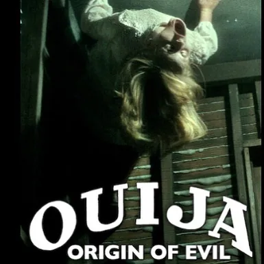
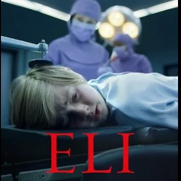

母親の目で見る
エスター
新しい娘を迎えてから続く小さな事故。ケイトと一緒に、この違和感を夫にどう説明するか考えながら観てほしい。
おすすめ度 ★ 4/5子どもの言葉を、最後まで信じられる？ 家族の中で誰の目を通して観るか、３本から選んで。
新しい娘を迎えてから続く小さな事故。ケイトと一緒に、この違和感を夫にどう説明するか考えながら観てほしい。
おすすめ度 ★ 4/5
母が仕掛けを知り尽くした降霊会で、娘だけが台本にない言葉を話し出す。その最初の一言を待つ時間が怖い。
おすすめ度 ★ 3/5 · ホラー度 3.5/5
窓の向こうに見えたものを医師は副作用だと言う。防護服を脱いだイーライと一緒に、誰を信じていいか考える一本。
おすすめ度 ★ 4/5 · ホラー度 2.5/5